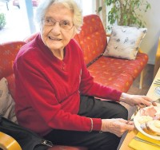

Arve Kaspersen Borgan
M, #69127, f. 17 mai 1895, d. 4 mars 1959
Foreldre
Biografi
Arve Kaspersen Borgan ble født den 17 mai 1895 på/i Borgan, Vikna, Nord-Trøndelag. Han giftet seg med
Marie Arntsdatter Storsul den 24 juni 1919 på/i Vikna, Nord-Trøndelag. Han døde den 4 mars 1959 på/i Vikna, Nord-Trøndelag. Han ble gravlagt den 11 mars 1959 på/i Valøy kirkegård, Vikna, Nord-Trøndelag.
Arve Kaspersen Borgan ble konfirmert den 17 juli 1910 på/i Garstad kirke, Vikna, Nord-Trøndelag. Han kjøpte i 1936 Borgan 69/14, Borgan, Vikna, Nord-Trøndelag.
| Sist redigert |
30 juni 2019 00:00:00 |
| Slektskap | 7-menning 2 ganger forskjøvet til Håkon Wahl |
Valbjørg Borgan
K, #69128, f. 9 mars 1900, d. 1915
Foreldre
Biografi
Valbjørg Borgan ble født den 9 mars 1900 på/i Borgan, Vikna, Nord-Trøndelag. Hun døde i 1915 på/i Vikna, Nord-Trøndelag.
Valbjørg Borgan ble døpt den 4 juni 1900 på/i Vikna, Nord-Trøndelag.
| Sist redigert |
21 januar 2018 00:00:00 |
| Slektskap | 7-menning 2 ganger forskjøvet til Håkon Wahl |
Ragnhild Borgan
K, #69129, f. 16 april 1902, d. 1968
Foreldre
Biografi
Ragnhild Borgan ble født den 16 april 1902 på/i Borgan, Vikna, Nord-Trøndelag. Hun giftet seg med
Elenius Åsgard i 1925. Hun døde i 1968 på/i Vikna, Nord-Trøndelag.
Ragnhild Borgan was also known as Ragnhild Åsgard. Hun ble døpt den 3 august 1902 på/i Vikna, Nord-Trøndelag.
| Sist redigert |
19 juni 2024 11:23:27 |
| Slektskap | 7-menning 2 ganger forskjøvet til Håkon Wahl |
Sverre Borgan
M, #69130, f. 31 juli 1906, d. 10 februar 1980
Foreldre
| Sønn | Torgeir Borgan+ (f. 28 april 1934, d. 25 oktober 2020) |
| Sønn | Odd Borgan (f. 5 januar 1938, d. 20 juni 1992) |
| Datter | Karen Borgan (f. 13 juli 1942) |
Biografi
Sverre Borgan ble født den 31 juli 1906 på/i Borgan, Vikna, Nord-Trøndelag. Han giftet seg med
Gudlaug Marie Andreassen Borgan den 30 desember 1932 på/i Vikna, Nord-Trøndelag. Han døde den 10 februar 1980 på/i Vikna, Nord-Trøndelag.
Sverre Borgan kjøpte i 1936 Sandstad 69/26, Borgan, Vikna, Nord-Trøndelag.
| Sist redigert |
19 juni 2024 11:22:06 |
| Slektskap | 7-menning 2 ganger forskjøvet til Håkon Wahl |
Marie Arntsdatter Storsul
K, #69131, f. 10 oktober 1896, d. 15 oktober 1977
Foreldre
Biografi
Marie Arntsdatter Storsul ble født den 10 oktober 1896 på/i Storsul, Vikna, Nord-Trøndelag. Hun giftet seg med
Arve Kaspersen Borgan den 24 juni 1919 på/i Vikna, Nord-Trøndelag. Hun døde den 15 oktober 1977 på/i Vikna, Nord-Trøndelag. Hun ble gravlagt den 21 oktober 1977 på/i Valøy kirkegård, Vikna, Nord-Trøndelag.
Marie Arntsdatter Storsul was also known as Marie Borgan.
| Sist redigert |
30 juni 2019 00:00:00 |
| Slektskap | 7-menning 2 ganger forskjøvet til Håkon Wahl |
Valbjørg Konstanse Borgan
K, #69132, f. 23 april 1920, d. 8 april 2000
Foreldre
| Sønn | Jan Arve Homstad (f. 31 oktober 1949) |
| Sønn | Tron Arnljot Homstad+ (f. 7 januar 1952, d. 7 mars 2017) |
Biografi
Valbjørg Konstanse Borgan ble født den 23 april 1920 på/i Borgan, Vikna, Nord-Trøndelag. Hun giftet seg med
Karle Johannes Homstad i 1948 på/i Overhalla, Nord-Trøndelag. Hun døde den 8 april 2000. Hun ble gravlagt den 14 april 2000 på/i Skage kirkegård, Overhalla, Nord-Trøndelag.
Valbjørg Konstanse Borgan was also known as Valbjørg Konstanse Homstad. Hun ble døpt den 13 juni 1920 på/i Garstad kirke, Vikna, Nord-Trøndelag.
| Sist redigert |
30 juni 2019 00:00:00 |
| Slektskap | 8-menning 1 gang forskjøvet til Håkon Wahl |
Gunnar Borgan
M, #69133, f. 6 august 1921, d. 2 april 1991
Foreldre
Biografi
Gunnar Borgan ble født den 6 august 1921 på/i Borgan, Vikna, Nord-Trøndelag. Han giftet seg med
Borgny Homstad. Han døde den 2 april 1991 på/i Namsos, Nord-Trøndelag. Han ble gravlagt den 2 april 1991 på/i Klinga kirkegård, Namsos, Nord-Trøndelag.
Gunnar Borgan ble døpt den 2 oktober 1921 på/i Garstad kirke, Vikna, Nord-Trøndelag.
| Sist redigert |
19 juni 2024 10:49:29 |
| Slektskap | 8-menning 1 gang forskjøvet til Håkon Wahl |
Sigrid Borgan
K, #69134, f. 13 juni 1926
Foreldre
Familie: Joleif Birger Opdal (f. 20 september 1925, d. 19 august 2002)
| Sønn | Kjell Arve Borgan (f. 24 april 1947) |
| Datter | Ellinor Opdal (f. 11 august 1951) |
Biografi
Sigrid Borgan ble født den 13 juni 1926 på/i Borgan, Vikna, Nord-Trøndelag. Hun giftet seg med
Joleif Birger Opdal på/i Overhalla, Nord-Trøndelag.
Sigrid Borgan was also known as Sigrid Opdal. Hun ble døpt den 15 august 1926 på/i Vikna, Nord-Trøndelag.
| Sist redigert |
30 juni 2019 00:00:00 |
| Slektskap | 8-menning 1 gang forskjøvet til Håkon Wahl |
Randi Borgan
K, #69135, f. 14 juli 1928, d. 3 juli 2019
Foreldre
Familie: Roy Høiby (f. 25 februar 1932, d. 5 juni 1969)
| Datter | Unni Randi Høiby+ (f. 24 september 1958) |
Biografi
Randi Borgan ble født den 14 juli 1928 på/i Borgan, Vikna, Nord-Trøndelag. Hun giftet seg med
Roy Høiby i 1958 på/i Vikna, Nord-Trøndelag. Hun døde den 3 juli 2019 på/i Drammen, Buskerud. Hun ble gravlagt den 16 juli 2019 på/i Skoger kirkegård, Drammen, Buskerud.
Randi Borgan was also known as Randi Høiby. Hun ble døpt den 16 september 1928 på/i Vikna, Nord-Trøndelag. Hun bodde på/i Løvøya, Åfjord, Sør-Trøndelag.
| Sist redigert |
16 juli 2019 00:00:00 |
| Slektskap | 8-menning 1 gang forskjøvet til Håkon Wahl |
Torgrim Borgan
M, #69136, f. 17 desember 1930, d. 18 august 2017
Foreldre
Familie: Irene Annie Overgård (f. 14 januar 1937)
| Sønn | Tore Borgan (f. 5 april 1958) |
| Datter | Ingrid Borgan (f. 22 juli 1960) |
| Datter | Bjørg Borgan+ (f. 29 januar 1963, d. 4 desember 2022) |
| Sønn | Arve Borgan (f. 29 mai 1967) |
Biografi
Torgrim Borgan ble født den 17 desember 1930 på/i Borgan, Vikna, Nord-Trøndelag. Han giftet seg med Irene Annie Overgård. Han døde den 18 august 2017. Han ble gravlagt den 24 august 2017 på/i Vikna baptistkirke, Rørvik, Vikna, Nord-Trøndelag.
Torgrim Borgan bodde på/i Rørvik, Vikna, Nord-Trøndelag. Han ble jordfestet den 24 august 2017 Rørvik kirkegård, Vikna, Nord-Trøndelag.
| Sist redigert |
22 august 2017 00:00:00 |
| Slektskap | 8-menning 1 gang forskjøvet til Håkon Wahl |
Arnljot Kolbjørn Borgan
M, #69138, f. 11 april 1935, d. 8 august 1950
Foreldre
Biografi
Arnljot Kolbjørn Borgan ble født den 11 april 1935 på/i Borgan, Vikna, Nord-Trøndelag. Han døde den 8 august 1950 på/i Vikna, Nord-Trøndelag. Han ble gravlagt den 12 august 1950 på/i Valøy kirkegård, Vikna, Nord-Trøndelag.
| Sist redigert |
4 desember 2012 00:00:00 |
| Slektskap | 8-menning 1 gang forskjøvet til Håkon Wahl |
Borgny Homstad
K, #69139, f. 2 januar 1923, d. 19 september 2022
Foreldre
Biografi
Borgny Homstad ble født den 2 januar 1923 på/i Overhalla, Nord-Trøndelag. Hun giftet seg med
Gunnar Borgan. Hun døde den 19 september 2022 på/i Namsos, Trøndelag. Hun ble gravlagt den 27 september 2022 på/i Klinga gravsted, Namsos, Trøndelag.
Borgny Homstad was also known as Borgny Borgan. Hun bodde på/i Bangsund; Klinga, Namsos, Nord-Trøndelag. Hun ble gravlagt den 27 september 2023 på/i Klinga kirkegård, Namsos, Trøndelag.
| Sist redigert |
16 oktober 2023 00:02:11 |
Johan Adolf Karlsen Homstad
M, #69140, f. 26 juni 1899, d. 18 desember 1988
Foreldre
Biografi
Johan Adolf Karlsen Homstad ble født den 26 juni 1899 på/i Furre, Overhalla, Nord-Trøndelag. Han giftet seg med
Anna Margrete Opdal. Han døde den 18 desember 1988. Han ble gravlagt den 22 desember 1988 på/i Skage kirkegård, Overhalla, Nord-Trøndelag.
Johan Adolf Karlsen Homstad ble døpt den 17 september 1899 på/i Skage kirke, Overhalla, Nord-Trøndelag. Han kjøpte i 1940 Verket 29/18, Homstad, Overhalla, Nord-Trøndelag.
| Sist redigert |
22 august 2015 00:00:00 |
Reidun Helene Johansen
K, #69141, f. 9 mars 1921, d. 18 september 2019
Foreldre
Familie: Richard Sedevart Moe (f. 2 juli 1915, d. 15 juni 1996)
| Datter | Randi Moe (f. 5 august 1949) |
| Sønn | Åsgeir Moe+ (f. 3 februar 1952) |

Reidun Helene Johansen
Biografi
Reidun Helene Johansen ble født den 9 mars 1921 på/i Hunnestad, Vikna, Nord-Trøndelag. Hun giftet seg med
Richard Sedevart Moe den 17 august 1946 på/i Kolvereid, Nord-Trøndelag. Hun døde den 18 september 2019 på/i Nærøy, Trøndelag. Hun ble gravlagt den 26 september 2019 på/i Kolvereid kirkegård, Nærøy, Trøndelag.
Reidun Helene Johansen was also known as Reidun Helene Moe. Hun ble døpt den 7 august 1921 på/i Garstad kirke, Vikna, Nord-Trøndelag.
| Sist redigert |
21 september 2019 00:00:00 |
| Slektskap | 10-menning 2 ganger forskjøvet til Håkon Wahl |
Anita Marie Borgan
K, #69142, f. 1 april 1949, d. 10 oktober 2010
Foreldre
Familie: Ingar Svein Reitan (f. 26 september 1944)
| Sønn | Geir Håkon Reitan (f. 17 september 1970) |
| Sønn | Bjørn Ivar Reitan (f. 18 mai 1974) |
| Sønn | Lars Espen Reitan (f. 27 april 1978) |
Biografi
Anita Marie Borgan ble født den 1 april 1949 på/i Vikna, Nord-Trøndelag. Hun døde den 10 oktober 2010 på/i Namsos, Trøndelag. Hun ble gravlagt den 16 oktober 2010 på/i Klinga kirkegård, Namsos, Nord-Trøndelag.
| Sist redigert |
16 oktober 2023 00:10:27 |
| Slektskap | 9-menning til Håkon Wahl |
Karle Johannes Homstad
M, #69143, f. 7 mai 1924, d. 25 april 1995
Foreldre
| Sønn | Jan Arve Homstad (f. 31 oktober 1949) |
| Sønn | Tron Arnljot Homstad+ (f. 7 januar 1952, d. 7 mars 2017) |
Biografi
Karle Johannes Homstad ble født den 7 mai 1924 på/i Overhalla, Nord-Trøndelag. Han giftet seg med
Valbjørg Konstanse Borgan i 1948 på/i Overhalla, Nord-Trøndelag. Han døde den 25 april 1995. Han ble gravlagt den 28 april 1995 på/i Skage kirkegård, Overhalla, Nord-Trøndelag.
Karle Johannes Homstad bodde på/i Overhalla, Nord-Trøndelag. Han kjøpte i 1953 12/1, Furre, Overhalla, Nord-Trøndelag.
| Sist redigert |
30 juni 2019 00:00:00 |
Bjørn Frits Johansen
M, #69144, f. 23 april 1923
Foreldre
Biografi
Bjørn Frits Johansen ble født den 23 april 1923 på/i Hunnestad, Vikna, Nord-Trøndelag. Han giftet seg med Ruth Ingebjørg Kristiansen den 5 juli 1958 på/i Trondheim, Sør-Trøndelag.
Bjørn Frits Johansen ble døpt den 7 juli 1924 på/i Vikna, Nord-Trøndelag.
| Sist redigert |
9 juni 2019 00:00:00 |
| Slektskap | 10-menning 2 ganger forskjøvet til Håkon Wahl |
Anna Margrete Opdal
K, #69145, f. 12 august 1899, d. 20 februar 1974
Foreldre
Biografi
Anna Margrete Opdal ble født den 12 august 1899 på/i Overhalla, Nord-Trøndelag. Hun giftet seg med
Johan Adolf Karlsen Homstad. Hun døde den 20 februar 1974. Hun ble gravlagt den 26 februar 1974 på/i Skage kirkegård, Overhalla, Nord-Trøndelag.
Anna Margrete Opdal was also known as Anna Margrete Homstad. Hun ble døpt den 1 oktober 1899 på/i Skage kirke, Overhalla, Nord-Trøndelag.
| Sist redigert |
19 mars 2019 00:00:00 |
Tron Arnljot Homstad
M, #69147, f. 7 januar 1952, d. 7 mars 2017
Foreldre
Familie:
| Datter | Tone Homstad (f. etter 1972) |
Biografi
Tron Arnljot Homstad ble født den 7 januar 1952 på/i Overhalla, Nord-Trøndelag. Han døde den 7 mars 2017 på/i Overhalla sykeheim, Overhalla, Nord-Trøndelag.
Tron Arnljot Homstad ble bisatt den 10 mars 2017 Skage kirke, Overhalla, Nord-Trøndelag.
| Sist redigert |
8 mars 2017 00:00:00 |
| Slektskap | 9-menning til Håkon Wahl |
Karl Sigvard Johannessen Homstad
M, #69148, f. 1877, d. 4 oktober 1907
Biografi
Karl Sigvard Johannessen Homstad ble født i 1877. Han giftet seg med
Benedikte Margrethe Andreasdatter. Han døde av blodstyrtning den 4 oktober 1907 på/i Homstadplass, Homstad, Overhalla, Nord-Trøndelag. Han ble gravlagt den 13 oktober 1907 på/i Skage kirkegård, Overhalla, Nord-Trøndelag.
| Sist redigert |
14 juli 2022 23:37:36 |
Benedikte Margrethe Andreasdatter
K, #69149, f. 16 november 1871
Biografi
Benedikte Margrethe Andreasdatter was also known as Benedikte Margrethe Homstad.
| Sist redigert |
22 august 2015 00:00:00 |
Svein Nilsen Kvalstad
M, #69150, f. 1764, d. 1821
Biografi
Svein Nilsen Kvalstad ble født i 1764 på/i Kvalstad, Overhalla, Nord-Trøndelag. Han giftet seg med
Anne Johnsdatter Gansmo. Han døde i 1821 på/i Kvalstad, Overhalla, Nord-Trøndelag.
| Sist redigert |
20 mars 2019 00:00:00 |
{kind=link}